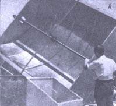
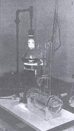

Dr. E.A. Farber Sunshine Superman
November/December 1973
"The energy crisis is really nothing new," says Dr. E.A. Farber, Director of the Solar Energy & Energy Conversion Laboratory at the University of Florida in Gainesville. "We were already running short of fossil fuels, our so-called 'conventional' sources of power, 40 years ago. It just hadn't come to the public's attention at that time."
Maybe not, but the world's supply of energy and its relationship to the development of nations most certainly had already come to the attention of a few farsighted individuals back there in the early 1930's, and Austrian-born Erich Farber was one of them.
Four decades ago, while still a high school student, Farber observed that the countries and civilizations which controlled the most energy-and used it-were the nations and cultures that also advanced most rapidly. Young Erich further noted that the power providing this advantage came mainly from the fossil fuels-gas, coal and oil-which obviously (to him, at least) would one day be exhausted.
"This led me directly to solar energy," Dr. Farber says. "I thought of the planet's human population as a family trying to live off its savings (fossil fuels) which were stored in a bank (underground) and which were being steadily depleted. This, of course, cannot go on indefinitely. Sooner or later that family has to begin living on its income, sooner or later we have to make do with the amount of renewable, incoming energy we receive. After mulling over the possibilities of wind, geothermal, tidal and other sources of power-all very good when the conditions are right for their use-I realized that the sun alone offered the resource I was seeking. Solar energy is readily available, well distributed, inexhaustible for all practical purposes and does not pollute the environment when converted and utilized."
Farber developed his ideas as he received the major part of his education in Europe and during the time he studied at the Universities of Missouri and Iowa. He further honed his keen interest in solar power while teaching at the Universities of Missouri, Iowa and Wisconsin. By the time he moved to Gainesville-20 years ago-to instruct at the University of Florida, Erich was quite possibly the planet's most enthusiastic and knowledgeable authority on the subject. Little wonder that the University of Florida's Solar Energy Lab is one of the largest and most advanced facilities of its kind in the world.
The UF solar energy installation is especially interesting because of its emphasis on working hardware. Ever think of building a solar energy collector or sun-operated water heater, stove or still? How about a solar turbine, steam engine, refrigerator or air conditioner? An electric car which has its batteries recharged by the sun? Or a "solar gravity" motor or a sewage treatment plant that uses Ole Sol's rays to double its processing capacity? All old hat to Farber, his staff of ten and the students who attend the three classes conducted by the Solar Energy Lab.
And don't think you can't duplicate UF's success just because you live in Minnesota or British Columbia. Farber believes that, "Florida isn't any better than many other areas of the earth for solar energy collection. Look at the Weather Bureau's data and you'll be surprised at how evenly this source of power is distributed. Pick practically any point on the face of the planet and, if people live there, the chances are very good that the surrounding region receives meaningful amounts of sunshine."
Yes, but is it practical to try to utilize the sun's rays to heat our houses, drive our engines, cook our food and otherwise power the industrialized society in which we live? "It depends on what you mean by 'practical'," says Dr. Farber. "What's practical to one man is not practical to another."
"We now know how to use the sun to provide all the forms of energy which we need in our daily lives. We can warm a house, heat water, air-condition buildings, produce electricity and so on. We've already done these things. We've even converted a Corvair automobile to run on batteries which can be charged by solar cells. Theoretically, at least, we could replace our present fossil-fueled transportation system with a sun-powered electrical system. Instead of gasoline stations, you'd drive your car into solar battery-charging stations. The attendants there would lift out your discharged batteries, give you a freshly charged set and you'd drive right on.
"Now this would be a very 'practical' way of doing business if you started it from scratch. It's pollution-free and it makes use of a virtually inexhaustible energy resource. But the point is that we're not starting from scratch. We're already set up to power our personal transportation with gasoline, and as long as we have gasoline and the government doesn't ration it, I'm sure we'll find it more 'practical' to keep right on using gasoline until we run out."
Maybe so. But in the meantime, Dr. Farber and his staff and the students in the classes conducted at the Solar Energy Lab are going to continue right on developing and operating sun-powered hardware of many kinds.
|
Dr. E.A. Farber Sun-powered space heaters, stills, pumps and sewage treatment plants. Solar-driven refrigerators, air conditioners, engines, stoves and cars. They're successfully harnessing Ole Sol to these and other devices at the University of Florida. |
Dr. E.A. Farber [ a] Assorted solar energy equipment is displayed at the University of Florida's Department of Solar Energy Conversion Research and Development Laboratory, headed by Dr. E.A.. Farber. |
 Dr. E.A. Farber [b] A refrigerator-center of photo-is driven indirectly by the sun's energy as Ole Sol heats oil to a high temperature. The hot liquid is then circulated around the generator of the cooling unit's ammonia-absorption system. |
 Dr. E.A. Farber [c] This sun-powered thermo-phase, shift reciprocating engine consists essentially of a column of water inside a tube which has a bellows at its top. As the liquid is vaporized and condensed by solar heat, its movement operates the bellows which-in turn-can spin a flywheel at several hundred rpm. |
Dr. E.A. Farber [d] This solar-driven 1/2-horsepower, closed-cycle, hot-air engine can also-without modification-berun on wood, coal or liquid fuels |
Dr. E.A. Farber [e] An open-cycle hot-air engine whichworks by taking in atmospheric-pressureair, compressing it, heating the air with the sun's energy and then lettingit exhaust as it expands. |
|
Dr. E.A. Farber [f] This electric car, driven daily by a laboratory staff member to obtain operating data under highway conditions, uses both nickel cadmium and lead-acid batteries. The batteries can be charged by using either solar cells or a sun-driven generator to produce electricity. |
Dr. E.A. Farber [g] Various mirrors of good quality are used in this parabolic concentrator. The device develops the high temperatures needed to run sophisticated, sun-powered engines. |
 Dr. E.A. Farber [h]Cylindrical parabolas designed to track (always face) the sun are very efficient collectors of solar energy. This one, which measures 6'X 8', has a glass-covered focal tube. It has been used to produce heated water vapor for a fractional-horsepower steam engine and to heat the oil which operates a solar refrigerator. |
|
Dr. E.A. Farber [i] Dr. Farber designed this portable solar cooker more than 10 years ago. It's merely an umbrella which has been coated with a reflective cloth, and which has a cooking rack mounted at the end of its handle. During unexpected downpours, you can use the ""cooker"" to keep you dry until the sun comes out again! |
 Dr. E.A. Farber [j] This closed-cycle reciprocating engine was built of glass to show its basic design. Just seconds after an outside heat source (usually the sun, but in this case, a heat lamp) is applied to the generator, the liquid inside begins to pump steadily through the apparatus. |
|